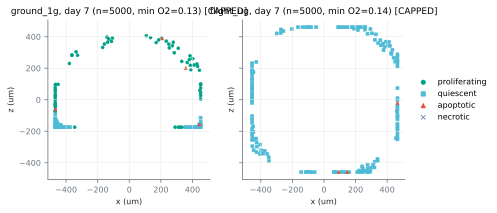
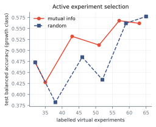
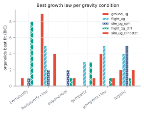
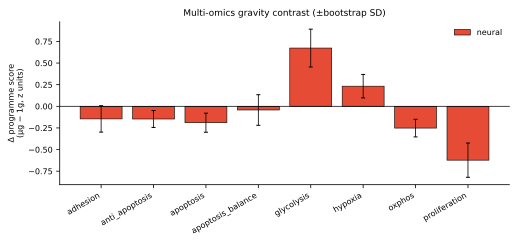
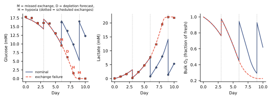

Explore ORBIO
Change the experiment. Watch the outcome move.
Interactive illustration, not live ORBIO inference.
Predicted class
GROWS 1.00x fold changeSchematic cell-state visualization. Parameters animate a transparent heuristic, not the trained model.
Real simulation results
Current outputs from the corrected 480-scenario run.
Figures below are copied from the repository output set and labelled by source run. Metrics are read from static JSON generated by the preprocessing script.
Result A
Growth trajectories
Simulated viable volume over seven days, grouped by gravity condition. Use this as a model readout, not as observed flight biology.
Each curve comes from the corrected simulator output. Numerical values are not altered in the website.
Result B
What does the model get right?
Random split is synthetic interpolation. Held-out drug and held-out flight are simulator conditions, not real biological validation.
Result C
What controls the simulation?
Sensitivity is not causal proof. It shows which parameters move this current synthetic system.
Result D
Digital twin
The current twin assimilates organoid growth using a Gompertz-based surrogate. It does not yet update the full cellular or GNN state.
Result E
What features does the AI use?
In the current synthetic dataset, drug and dose related features dominate the trained predictor. Permutation importance is not biological causality.
More results
Additional outputs, separated by source run.
Cross sections

Source run: pipeline_corrected_v2. Shows day-7 simulated sections; limited by current simulator assumptions.
Active learning

Single-seed exploratory comparison. Repeat before claiming improvement.
Growth laws

Fits classic growth curves to simulated trajectories, not real organoid measurements.
Omics direction checks

Supporting run: outputs/omics/flight_v2. Directional prior, not full calibration.
Medium monitor

Supporting run: outputs/medium. Synthetic medium telemetry monitor for QA/QC design.
Validation ladder
Where the current evidence sits.
- NumericalSimulation runs and convergence checks where available.
- SyntheticRandom and grouped tests against simulator outcomes.
- Biological directionSelected literature and transcriptomic direction checks.
- Domain transferSimulated analogue to real flight remains unresolved.
- Real growthLimited or pending paired validation.
- ProspectiveFuture flight prediction, not yet complete.
Current limitations
The honest edge of the model.
- Sparse real-flight data.
- Many magnitude parameters remain assumptions.
- Simulated microgravity analogues are not real flight.
- Vibration and g-jitter are not yet integrated.
- Current drug types are archetypes.
- The molecular layer is still limited.
- The current twin is growth-state rather than full-state assimilation.
- Current predictions should not be treated as biological or clinical truth.